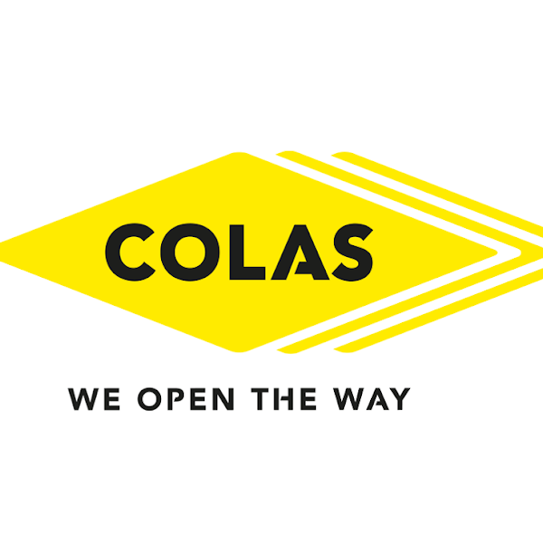
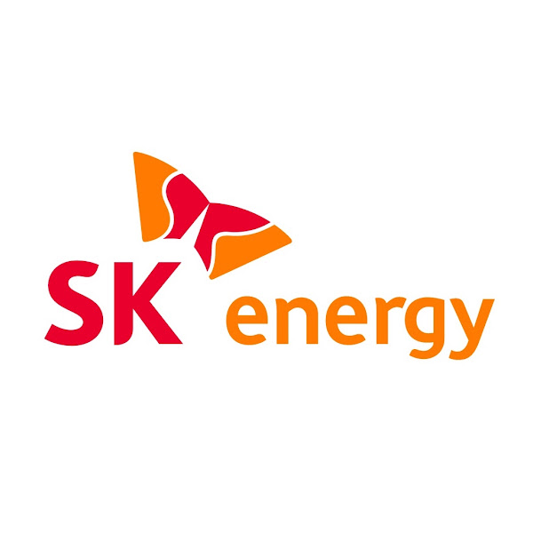
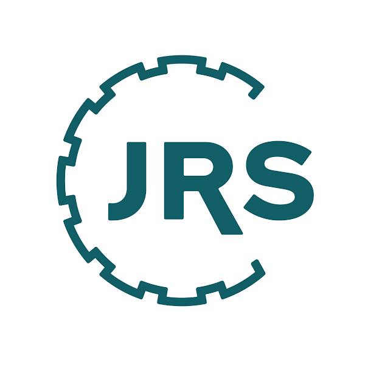

인우이엔씨는 변화하는 산업 환경 속에서도 본질에 집중하며,
품질과 신뢰를 핵심 가치로 지속적인 성장을 추구합니다.
앞으로도 PAVEMENT 산업의 든든한 파트너로서
고객과 함께 성장하는 기업이 되겠습니다.
산업과 함께 성장해온 인우이엔씨
1999.-충인건설(주) 설립 (충청남도 아산시)
2000.-SK내촌충전소 설립 (경기도 포천시)
2001.-자본금 증자 (900,000,000원)
2004.-(주)인우이엔씨로 상호 변경
2004.-JRS社로부터 VIATOP 수입 판매 시작
2007.-사업목적에 포장공사, 철근콘크리트공사업관련 수입 및 수출, 도매업 추가
2009.-자본금 증자 (2,000,000,000원)
2011.-SK에너지(주)와 아스팔트 판매대리계약 체결
2012.-자본금 증자 (4,000,000,000원)
2013.-KS F 2349 인증 취득 (한국표준협회)
2013.-(주)인우이엔씨 인천공장 준공 (일반 아스콘, 개질 아스콘)
2014.-본사 이전 (서울특별시 영등포구)
2015.-단체표준인증 전환 (한국아스콘공업협동조합연합회)
INWOO ENC's Partner
인우이엔씨는 국내외 대형기업과 파트너쉽을 맺어 고객에게 다양한 가치를 전달하고 있습니다.



본사
장소서울특별시 영등포구 버드나루로 84
제일빌딩 16층
연락T. 02-2676-2539 | F. 02-2676-2855
인천공장
장소인천 서구 도담로 161
(주)인우이엔씨 인천공장
연락T. 032-590-1205 | F. 032-590-1290